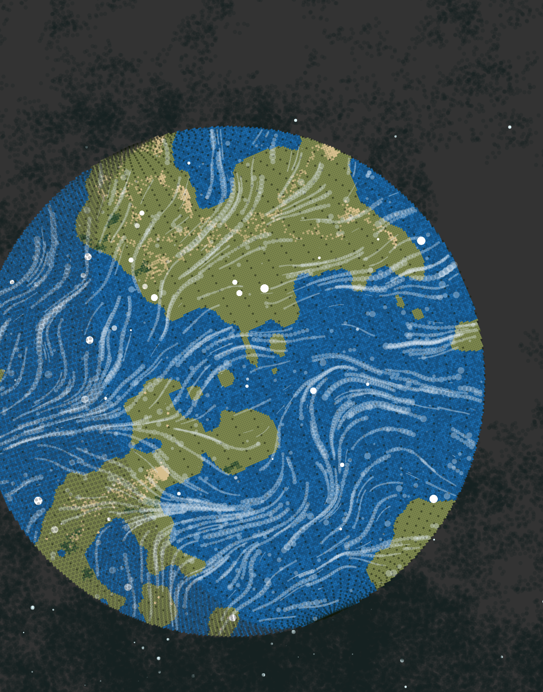
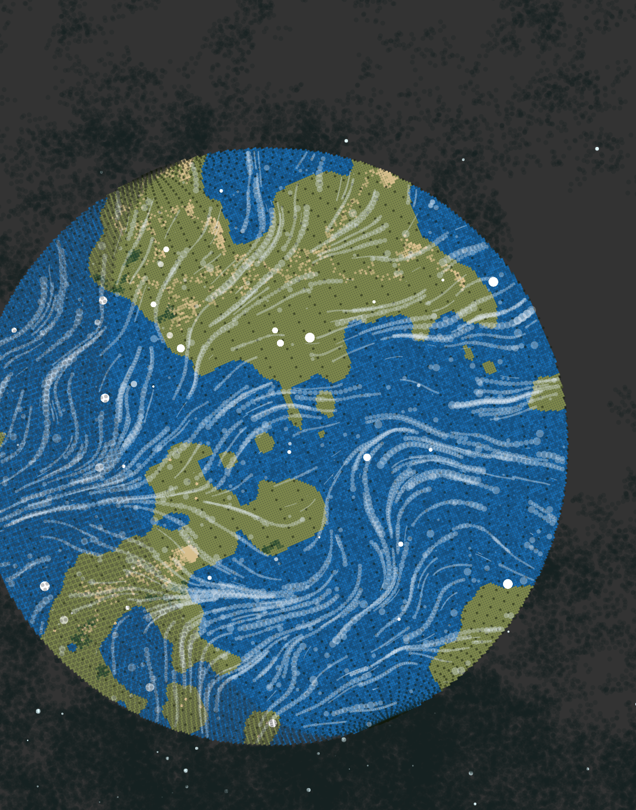
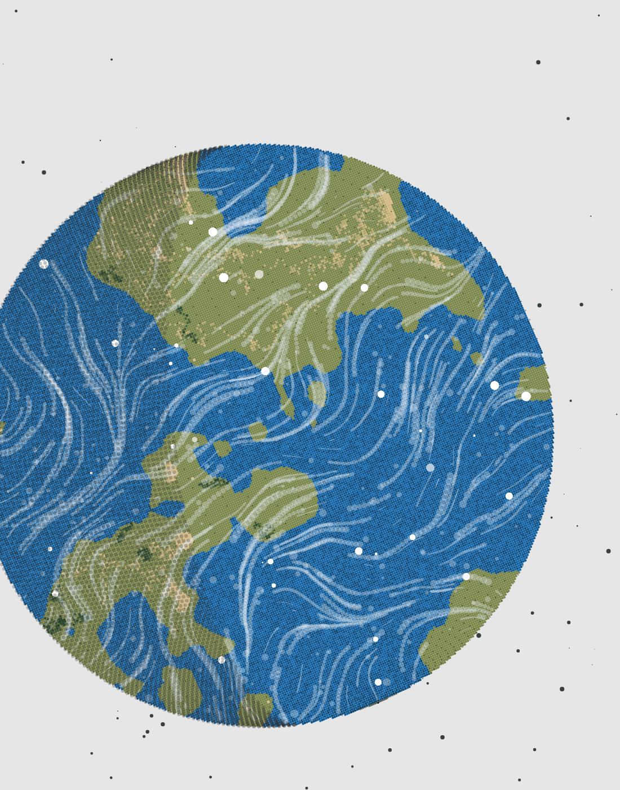

Digital
Buy through OpenSea Ξ0.03 (ETH)

- A unique digital generative planet with a continuously-evolving atmosphere and space.
- Choice of specific planet.
- ERC-721 non-fungible token.
- Includes destruction of physical virtual twin.
Images of Earth have the power to inspire reflection and action. From the iconic Blue Marble of Apollo 17 to the Pale Blue Dot of Voyager 1, technological advances have encouraged us to see our planet from a different perspective and focus on a core concept: impermanence.
Our planet is dynamic and always changing; with atmospheric and oceanic cycling, erosion, aridification, reforestation, etc., nothing is permanent. Humans understand this from images generated by satellite sensors and from scientific simulations of the Earth system. Our representations of Earth — planets in silico — are also impermanent and offer a multiverse of (mostly) digital “realities” for us to explore.
Buy through OpenSea Ξ0.03 (ETH)

Buy through Stripe $99 (USD)

As a celebration of our planet and Earth Day 2022, I am offering either digital or physical representations of Earth-like planets. You can choose to purchase a digital non-fungible token that I’ve minted on the Polygon blockchain or a physical print (11 x 14 in) that I will package and ship (or, of course, you can also choose to just browse the images and appreciate the planets).
For each purchase, I will “burn” their physical or digital twin, as an act of destruction that should make you pause and consider: what do you value? Buyers of the digital version will additionally receive a video of the burning of the physical print. Buyers of the physical version will additionally receive a certification of the destruction of the digital token.
What are the consequences of your decision for either the dynamic digital planet with an ever-changing atmosphere or the static physical memorial for a planet that once existed in bits and bytes? As with our choices on Earth, there are no perfect answers. The supply is capped at 422 virtual twins, with the ultimate burning of one twin.
Half of the proceeds from this sale will go to organizations that I think are doing good work for Earth, including The Trust for Public Land, Spark Eco, and The Ocean Cleanup.
Aaron Berdanier is a generative artist and data scientist. He has a background in ecological research and worked for years studying the effects of climate change on Earth’s ecosystems. When he is not creating digital worlds, he likes to go on hikes and jogs outside to enjoy the forests and mountains. You can follow his work on Twitter @berdaniera.